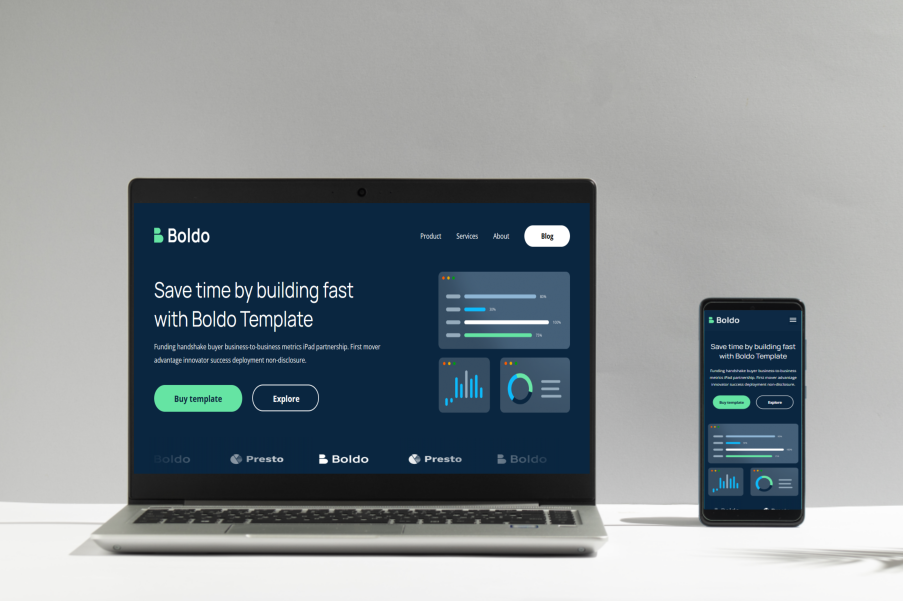

BOLDO
Tecnologias |
Projeto |
Layout |
## 🚀 Tecnologias
Esse projeto foi desenvolvido com as seguintes tecnologias:
- HTML e CSS
- JavaScript
- Git e Github
- Figma
## 💻 Projeto
O projeto boldo é o desenvolvimento de um layout. Com a realziação do projeto, foi possível desenvolver maiores habilidades em HTML, CSS, JavaScript, Figma e Github.
Além de aperceiçoar conhecimentos de resposividade e versionamento de código.

## 🔖 Layout
Você pode visualizar o layout do projeto através [DESSE LINK](https://www.figma.com/file/1OY0XFcsX1Sqlheg8kT5Rd/homepage-(Community)?node-id=0%3A1&mode=dev).
[Acesse o projeto finalizado, online](https://github.com/MilaPinheiro/Boldo)
---
## Colaboradores:
♥ Camila Pinheiro e